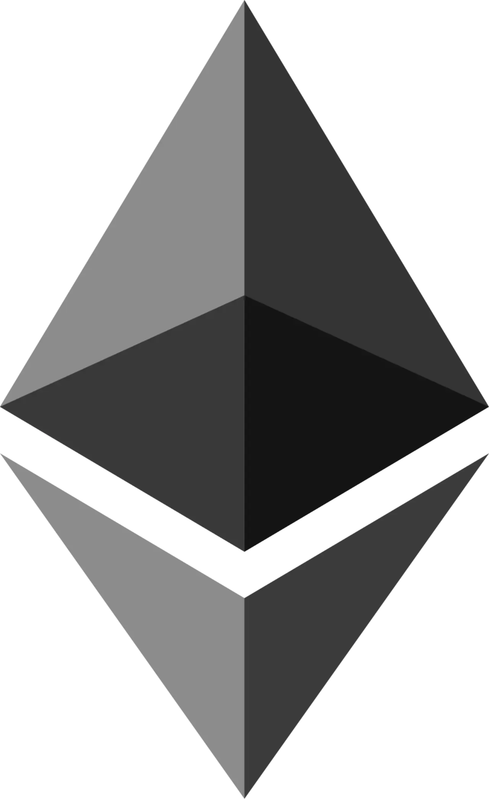

이더리움은 Pectra와 Fusaka를 지나 다음 업그레이드 논의로 이동하고 있습니다. Ethereum Foundation의 2026년 5월 프로토콜 업데이트는 Glamsterdam 준비, ePBS, 가스 한도, 상태 비용 재가격화 같은 주제를 다룹니다. 이 흐름은 이더리움이 단순히 더 많은 거래를 처리하는 체인으로 가는 것이 아니라, 검증자와 사용자, 롤업, 지갑 경험을 함께 조정하는 방향으로 움직이고 있음을 보여 줍니다.
크립토 시장에서는 업그레이드 이름이 가격 기대와 바로 연결되곤 합니다. 하지만 프로토콜 업그레이드는 투자 이벤트이기 전에 인프라 변경입니다. 가스 한도가 올라가면 처리량은 늘 수 있지만, 노드 부담과 상태 성장, 검증자 운영 비용도 함께 봐야 합니다. 사용자에게 중요한 것은 발표된 처리량 숫자가 아니라 지갑에서 실제로 느끼는 비용과 실패율입니다.
가스 한도보다 체감 비용이 중요합니다

가스 한도 상향은 더 많은 트랜잭션을 담을 수 있게 하는 방법입니다. 그러나 사용자가 느끼는 비용은 L1 가스 한도만으로 정해지지 않습니다. 롤업이 데이터를 얼마나 효율적으로 올리는지, 지갑이 트랜잭션을 어떻게 묶는지, 혼잡 시간에 수수료가 어떻게 튀는지에 따라 달라집니다. 숫자가 커져도 사용자가 여전히 복잡하고 비싸다고 느끼면 업그레이드의 체감 효과는 제한됩니다.
이더리움의 중요한 과제는 복잡함을 줄이는 것입니다. 사용자는 어느 롤업에 있는지, 브리지를 어떻게 써야 하는지, 가스 토큰을 어디서 마련해야 하는지에서 자주 막힙니다. 프로토콜이 좋아져도 지갑과 앱이 어렵다면 사용자는 떠납니다. 업그레이드는 체인 내부의 성능과 사용자 화면의 단순함이 함께 좋아질 때 의미가 큽니다.
롤업은 비용과 신뢰를 같이 팝니다
이더리움 확장은 롤업과 함께 움직입니다. 롤업은 많은 거래를 묶어 L1에 데이터를 올리며 비용을 낮춥니다. Fusaka와 이후 Blob 관련 변화는 롤업 비용 구조에 영향을 줍니다. 하지만 롤업 선택은 수수료만의 문제가 아닙니다. 데이터 가용성, 증명 방식, 운영자 집중, 브리지 보안, 출금 지연이 모두 사용자 신뢰를 만듭니다.
싸다고 무조건 좋은 롤업은 아닙니다. 보안 가정이 약하거나 운영이 불투명하면 큰 사고가 날 수 있습니다. 반대로 보수적인 설계는 비용이 조금 높을 수 있습니다. 사용자는 수수료와 보안 사이에서 균형을 선택해야 하고, 앱 개발자는 그 균형을 이해하기 쉽게 보여 줘야 합니다.
검증자 부담은 네트워크의 바닥입니다
가스 한도와 처리량을 높이면 네트워크 참여자에게 더 많은 부담이 갈 수 있습니다. 노드를 운영하는 데 필요한 저장공간, 대역폭, 처리 능력이 커지면 소규모 검증자는 불리해질 수 있습니다. 탈중앙화는 구호가 아니라 운영 비용의 문제입니다. 누구나 합리적인 비용으로 검증에 참여할 수 있어야 네트워크는 단단해집니다.
그래서 이더리움 개발자들은 성능 향상과 운영 부담을 함께 조정합니다. 상태 성장, 데이터 저장, 블록 빌더 구조, 검증자 경험이 모두 연결되어 있습니다. 빠른 체인이 되려다 검증자가 줄어들면 장기 보안이 약해질 수 있습니다. 업그레이드의 성공은 처리량과 탈중앙화 사이의 균형에서 갈립니다.
가격보다 로드맵을 확인해야 합니다
업그레이드 뉴스가 나오면 토큰 가격이 먼저 움직일 수 있습니다. 그러나 장기적으로는 실제 사용량, 개발자 활동, 수수료 구조, 롤업 생태계의 안정성이 더 중요합니다. 이더리움은 단일 앱이 아니라 여러 층이 함께 움직이는 인프라입니다. 한 번의 업그레이드가 모든 문제를 해결하지 않습니다.
크립토 투자자는 업그레이드 이름보다 무엇이 바뀌는지 확인해야 합니다. 가스 한도, Blob, 계정 추상화, ePBS 같은 용어가 가격을 밀어 올리는 재료로만 소비되면 위험합니다. 아래 내용은 투자 조언이 아니며, 프로토콜 문서와 온체인 데이터, 본인의 위험 감내 범위를 함께 확인해야 합니다.
이더리움 업그레이드는 이름보다 체감 비용이 중요합니다. 사용자는 로드맵의 기술 용어보다 지갑에서 거래가 얼마나 빨리 확인되는지, 레이어2 수수료가 얼마나 안정적인지, 검증자가 네트워크를 운영하는 비용이 과도하게 늘지 않는지를 봅니다. 가스 한도를 올리거나 데이터 처리 방식을 바꾸는 논의는 처리량을 높일 수 있지만, 노드 운영 부담과 보안 균형을 함께 건드립니다. 그래서 업그레이드는 속도 경쟁이 아니라 탈중앙성과 사용성의 조율입니다.
크립토 시장에서는 업그레이드 기대가 가격으로 먼저 움직일 때가 많습니다. 하지만 실제 가치는 배포 이후에 확인됩니다. 지갑 오류가 줄었는지, 디앱 수수료가 예측 가능해졌는지, 레이어2 간 이동이 편해졌는지, 개발자가 새 기능을 안정적으로 쓰는지 봐야 합니다. 이더리움은 발표보다 실행이 중요한 네트워크입니다. 다음 업그레이드를 읽을 때도 이름이 아니라 사용자가 하루에 겪는 작은 마찰이 얼마나 줄어드는지를 기준으로 삼아야 합니다.
개발자 생태계도 업그레이드의 중요한 수혜자이자 부담자입니다. 프로토콜이 바뀌면 지갑, 거래소, 브리지, 디파이 서비스가 코드를 점검해야 합니다. 작은 호환성 문제가 사용자 자산 이동을 막을 수 있기 때문에 테스트넷 결과와 클라이언트 다양성이 중요합니다. 업그레이드가 성공하려면 핵심 개발자 발표뿐 아니라 지갑과 인프라 사업자가 문제없이 따라오는지 확인해야 합니다. 네트워크의 체감 품질은 사용자 화면에서 완성됩니다.
사용자에게 가장 분명한 변화는 수수료 예측 가능성입니다. 거래 한 번에 얼마가 들지 알기 어렵다면 좋은 앱도 오래 쓰기 힘듭니다. 특히 게임, 소셜, 소액 결제처럼 거래 빈도가 높은 서비스는 수수료 변동에 민감합니다. 업그레이드가 이런 사용처를 넓히려면 평균 수수료뿐 아니라 피크 시간대의 튐 현상을 줄여야 합니다. 블록체인의 대중화는 거창한 비전보다 실패 없는 작은 거래에서 시작됩니다.
이더리움의 다음 과제는 더 빠른 체인이 되는 것만이 아닙니다. 더 이해하기 쉬운 지갑, 더 안전한 롤업, 더 낮은 실패율, 더 넓은 검증자 참여가 필요합니다. 사용자가 느끼는 블록체인은 백서의 숫자가 아니라 지갑에서 한 번에 성공하는 거래입니다.